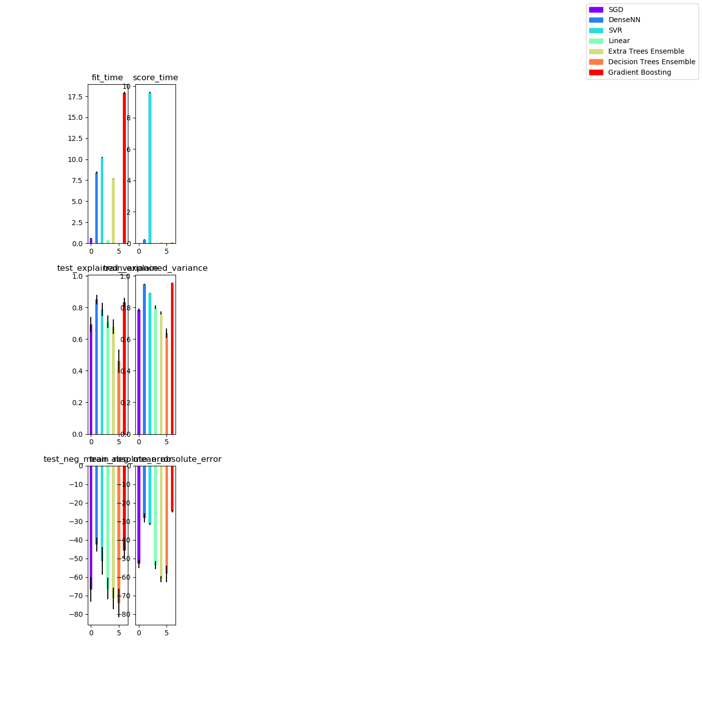
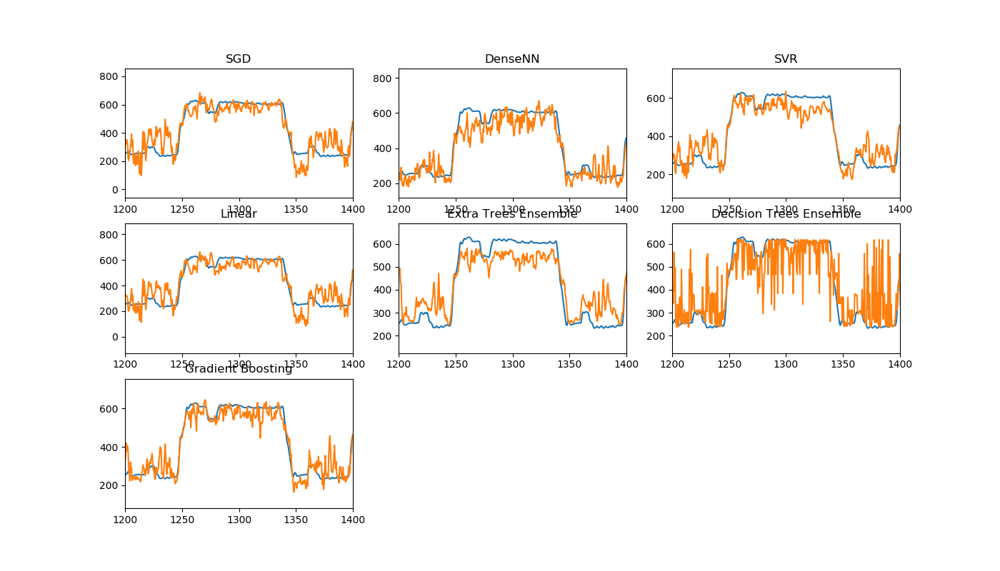

Note
Click here to download the full example code
Comparison of multiple regression techniques applied to clustered data¶
Firing rates are used as an input to a set of single-value regressors to compare their performance on estimating position. Performance is measured with explained variance and mean absolute error.
- 
- 
Out:
[SGD] Starting...
[SGD] Fit time 0.579 +- 0.018 | Score time 0.01085 +- 0.00011
[SGD] explained_variance: Test score 0.6922 +- 0.048 | Train score 0.7841 +- 0.009
[SGD] neg_mean_absolute_error: Test score -66.76 +- 6.6 | Train score -52.86 +- 2.3
[DenseNN] Starting...
[DenseNN] Fit time 8.445 +- 0.12 | Score time 0.2342 +- 0.017
[DenseNN] explained_variance: Test score 0.8505 +- 0.031 | Train score 0.9474 +- 0.0028
[DenseNN] neg_mean_absolute_error: Test score -42.47 +- 3.9 | Train score -28.08 +- 2.4
[SVR] Starting...
[SVR] Fit time 10.21 +- 0.058 | Score time 9.598 +- 0.046
[SVR] explained_variance: Test score 0.7876 +- 0.042 | Train score 0.8902 +- 0.0022
[SVR] neg_mean_absolute_error: Test score -51.31 +- 7.4 | Train score -31.39 +- 0.61
[Linear] Starting...
[Linear] Fit time 0.365 +- 0.00096 | Score time 0.009981 +- 0.00011
[Linear] explained_variance: Test score 0.7105 +- 0.038 | Train score 0.8024 +- 0.012
[Linear] neg_mean_absolute_error: Test score -66.31 +- 5.8 | Train score -53.62 +- 2.2
[Extra Trees Ensemble] Starting...
[Extra Trees Ensemble] Fit time 7.684 +- 0.047 | Score time 0.07261 +- 0.00062
[Extra Trees Ensemble] explained_variance: Test score 0.6787 +- 0.047 | Train score 0.7644 +- 0.0095
[Extra Trees Ensemble] neg_mean_absolute_error: Test score -71.61 +- 5.8 | Train score -61.16 +- 1.7
[Decision Trees Ensemble] Starting...
[Decision Trees Ensemble] Fit time 0.02919 +- 0.00036 | Score time 0.009265 +- 0.00015
[Decision Trees Ensemble] explained_variance: Test score 0.4613 +- 0.074 | Train score 0.6376 +- 0.029
[Decision Trees Ensemble] neg_mean_absolute_error: Test score -74.06 +- 7.7 | Train score -58.32 +- 4.4
[Gradient Boosting] Starting...
[Gradient Boosting] Fit time 17.92 +- 0.12 | Score time 0.036 +- 7.6e-05
[Gradient Boosting] explained_variance: Test score 0.8324 +- 0.027 | Train score 0.9552 +- 0.0024
[Gradient Boosting] neg_mean_absolute_error: Test score -45.79 +- 4.5 | Train score -24.59 +- 0.73
[SGD] Starting...
[DenseNN] Starting...
[SVR] Starting...
[Linear] Starting...
[Extra Trees Ensemble] Starting...
[Decision Trees Ensemble] Starting...
[Gradient Boosting] Starting...
import numpy as np
import sklearn.metrics
from sklearn.svm import SVR
from sklearn.linear_model import LinearRegression, SGDRegressor
from sklearn.ensemble import ExtraTreesRegressor, GradientBoostingRegressor
from sklearn.neighbors import KNeighborsRegressor
from sklearn.multioutput import MultiOutputRegressor
from sklearn.gaussian_process import GaussianProcessRegressor
from sklearn.gaussian_process.kernels import WhiteKernel, RBF
from sklearn.tree import DecisionTreeRegressor
from sklearn.preprocessing import StandardScaler
from sklearn.model_selection import train_test_split, cross_validate, cross_val_predict
from sklearn.pipeline import make_pipeline
from sklearn.metrics.scorer import _BaseScorer
from mlneuro.regression import DenseNNRegressor
from mlneuro.multisignal import multi_to_single_signal
from mlneuro.preprocessing.signals import process_clustered_signal_data
from mlneuro.preprocessing.stimulus import stimulus_at_times, smooth_stimulus, stimulus_gradient_mask
from mlneuro.utils.io import load_array_dict
from mlneuro.utils.visuals import n_subplot_grid
from mlneuro.crossvalidation import generate_crossvalidator
# Plot bars of metrics comparing regressors
DISPLAY_BAR_PLOTS = True
# Plot the predicted value in each dimension
DISPLAY_DATA_PLOTS = True
# The time range to show in the plot (None for auto)
# default is a small range for example plots in documentation
PLOT_X_RANGE = [1200,1400]
# Predicted data dimension to show
SHOW_DATA_DIM = 0
# Number of cross-validated folds
N_FOLDS = 3
# A set of estimators to test
ESTIMATORS = {'SGD': MultiOutputRegressor(SGDRegressor(loss='huber', max_iter=1000, tol=1e-3, epsilon=5)),
'DenseNN': DenseNNRegressor(dropout=0.25, verbose=0),
'SVR': MultiOutputRegressor(SVR(C=40, epsilon=5)),
'Linear': LinearRegression(),
'Extra Trees Ensemble': ExtraTreesRegressor(n_estimators=200, max_features='auto', min_samples_leaf=0.01, min_samples_split=0.02),
# 'Gaussian Process': GaussianProcessRegressor(kernel=(RBF() + WhiteKernel()), alpha=1e-5, n_restarts_optimizer=2, normalize_y=True),
'Decision Trees Ensemble': DecisionTreeRegressor(min_samples_leaf=0.005, min_samples_split=0.01, max_features='sqrt'),
'Gradient Boosting': MultiOutputRegressor(GradientBoostingRegressor(n_estimators=200, learning_rate=0.1, max_depth=4,
random_state=0, loss='ls'))
}
SCORERS = ['explained_variance', 'neg_mean_absolute_error'] # For bar plots
METRICS = ['explained_variance_score', 'mean_absolute_error'] # For data plots
# Load data
from mlneuro.datasets import load_restaurant_row
data = load_restaurant_row()
# Clean up stimulus data
stimulus_times = data['full_stimulus_times']
stimulus_data = data['full_stimulus']
stimulus_data = smooth_stimulus(stimulus_times, stimulus_data)
y_train_mask = stimulus_gradient_mask(stimulus_times, stimulus_data, min_g=8, max_g=500)
# Convert to a single signal
# Ensure unique cell ids
# Bin time, get firing rates with history in previous bins
T, X = process_clustered_signal_data(data['signal_times'], data['signal_cellids'],
temporal_bin_size=0.5,
bins_before=2,
bins_after=2,
flatten_history=True)
# Get stimulusv alues at spike times
y = stimulus_at_times(stimulus_times, stimulus_data, T)
# Get scores and display for each estimator
results = {}
for name, estimator in ESTIMATORS.items():
print('[{}] Starting...'.format(name))
pipeline = make_pipeline(StandardScaler(), estimator)
cv = generate_crossvalidator(pipeline, X, y, training_mask=None, n_splits=N_FOLDS)
# Use the convenient cross_validate function to score
results[name] = cross_validate(pipeline, X, y, scoring=SCORERS, cv=cv, return_train_score=True)
fit_time = results[name]['fit_time']
score_time = results[name]['score_time']
print('[{}] Fit time {:.4} +- {:.2} | Score time {:.4} +- {:.2}'.format(name,
np.mean(fit_time), np.std(fit_time), np.mean(score_time), np.std(score_time)))
for scorer in SCORERS:
test_score = results[name]['test_' + scorer]
train_score = results[name]['train_' + scorer]
print ('[{}] {}: Test score {:.4} +- {:.2} | Train score {:.4} +- {:.2}'.format(name,
scorer, np.mean(test_score), np.std(test_score), np.mean(train_score), np.std(train_score)))
# Display bar plots comparing the scores per estimator
if DISPLAY_BAR_PLOTS:
results_keys = list(results.items())[0][1].keys()
# Make room on the right side of the plot for
fig, axes = n_subplot_grid(len(results_keys), max_horizontal=2, right=0.25, figsize=(14,14))
from matplotlib.pyplot import cm
from matplotlib.patches import Patch
colors = cm.rainbow(np.linspace(0, 1, len(results)))
key_axes = {}
for key, ax in zip(results_keys, axes):
bars = []
ax.set_title(key)
metric_results = []
for est_key in results:
metric_results.append(results[est_key][key])
metric_results = np.array(metric_results)
inds = np.arange(metric_results.shape[0])
width = 0.5
means = np.mean(metric_results, axis=1)
stds = np.std(metric_results, axis=1)
ax.bar(inds, means, width, color=colors, yerr=stds)
key_axes[key] = ax
# Code to plot separate bars instead of mean/std error
# for metric_fold in range(metric_results.shape[1]):
# ax.bar(inds + width * metric_fold, metric_results[:, metric_fold], width, color=colors)
# ax.set_xticks(inds + width / metric_results.shape[1])
for key in key_axes:
if len(key) > 5 and key[:5] == 'test_':
train_ax = key_axes['train_' + key[5:]]
test_ax = key_axes[key]
ylims = np.array([train_ax.get_ylim(), test_ax.get_ylim()])
ylims = [np.min(ylims), np.max(ylims)]
train_ax.set_ylim(ylims)
test_ax.set_ylim(ylims)
patches = [Patch(color=c, label=l) for c, l in zip(colors, results.keys())]
fig.legend(handles=patches)
fig.show()
if DISPLAY_DATA_PLOTS:
results = {}
for name, estimator in ESTIMATORS.items():
print('[{}] Starting...'.format(name))
pipeline = make_pipeline(StandardScaler(), estimator)
cv = generate_crossvalidator(pipeline, X, y, training_mask=None, n_splits=N_FOLDS)
y_pred = cross_val_predict(pipeline, X, y, cv=cv)
results[name] = y_pred
fig, axes = n_subplot_grid(len(ESTIMATORS), figsize=(14,8))
for ax, (name, y_pred) in zip(axes, results.items()):
ax.plot(T, y[:, SHOW_DATA_DIM], T, y_pred[:, SHOW_DATA_DIM])
if PLOT_X_RANGE is not None: ax.set_xlim(PLOT_X_RANGE)
ax.set_title(name)
fig.show()
Total running time of the script: ( 6 minutes 18.622 seconds)